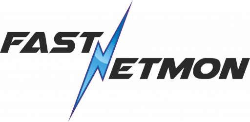

<div class="main">
  <div class="container-md">
    <div class="content">
      <div class="block">
        <h1>Our partners</h1>
        <p class="lead">
          SensorFleet provides an open platform for hosting and orchestrating cyber
          security tools. Find out more about our technology partners and their
          solutions, available as SensorFleet Instruments, here:
        </p>
      </div>
      <div class="block">
        <div class="row my-n2 mx-md-n2 my-md-n0">
          <div class="col-12 col-md-6 col-lg-4 px-md-2 py-2">
            <div class="box h-full p-4">
              <h2 class="h3">
                <a href="https://www.sensorfu.com/" target="_new">SensorFu</a>
              </h2>
              <div class="bg-white p-3 rounded-sm">
                <a href="https://www.sensorfu.com/" target="_new">
                  
                </a>
              </div>
              <p>
                Beacon - Always know if your network leaks. Network segmentation is a
                foundational mechanism for securing the critical networks, but
                verification of segregation has been notoriously hard. Until the SensorFu
                Beacon automating the testing of network segmentation, that is.
              </p>
              <p>
                <a class="btn btn-secondary" href="https://www.sensorfu.com/" target="_new">More &raquo;</a>
              </p>
            </div>
          </div>
          <div class="col-12 col-md-6 col-lg-4 px-md-2 py-2">
            <div class="box h-full p-4">
              <h2 class="h3">
                <a href="https://fastnetmon.com/" target="_new">FastNetMon</a>
              </h2>
              <div class="bg-white p-3 rounded-sm">
                <a href="https://fastnetmon.com/" target="_new">
                  
                </a>
              </div>
              <p>
                FastNetMon is a high-performance DDoS mitigation solution with a broad,
                global user base. As a software solution, FastNetMon has been designed
                with an easy integrability in mind, and is a natural fit on SensorFleet
                platform.
              </p>
              <p>
                <a class="btn btn-secondary" href="https://fastnetmon.com/" target="_new">More &raquo;</a>
              </p>
            </div>
          </div>
        </div>
      </div>
    </div>
  </div>
</div>
